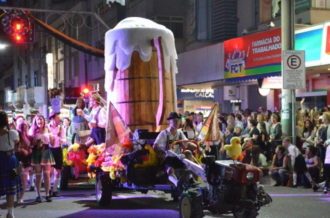
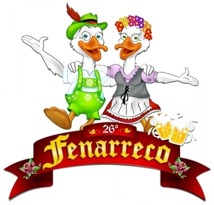
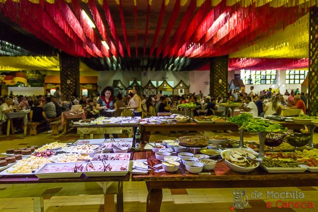

Convite
Venha conhecer a Fenarreco e participe desse momento inesquecível
Outubro tem muita festa legal e não podemos esquecer da Fenarreco, a festa do Marreco da cidade de Brusque-SC. Vai de 04 a 14 de Outubro e o principal atrativo são os pratos típicos, um deles bem famoso é a base de marreco e repolho roxo (ente mitrotkohl), além do chopp gelado e apresentações de grupos folclóricos e bandas alemãs. Considerada a maior festa de Brusque e uma das maiores de Santa catarina em Outubro, estamos contando os dias para saborear um delicioso marreco recheado, acompanhado de um chope bem gelado. Então venha se divertir na 33ª Fenarreco!
História da Fenarreco
Quer descobrir como começou essa festa? Continue lendo a seguir
A Fenarreco – Festa Nacional do Marreco, nasceu em 1985, inspirada na criação da Oktoberfest, de Blumenau, para atender aos inúmeros turistas que chegavam à cidade à procura da carne de pato. O marreco tornou-se tradicional depois que os clubes começaram a adotá-lo entre as opções gastronômicas servidas durante festas e eventos sociais. O costume do uso da carne do marreco foi trazido pelos imigrantes alemães, que no continente europeu utilizavam o ganso como o principal prato na ceia natalina. Como em terras brasileiras, no início do século 19, não existiam gansos, eles foram substituídos inicialmente por patos selvagens e depois pela atual qualidade, denominado pato de pequim, já que marreco é a denominação dada ao pato de pequim na nossa região.
Comidas Tipicas
Brusque,2019
 principais atrações das festas de outubro é a gastronomia.se destaca pelo famoso marreco com o repolho roxo. A escolha pela iguaria é garantia de muito sabor. Além do marreco, há também o eisbein (joelho de porco), frango alemão, filé à brasileira, salsichas especiais, schalatplatte (bisteca suína, joelho de porco e salsicha vermelha), risoto de marreco e também um delicioso buffet. O almoço é servido após abertura dos portões. O biergarten abre diariamente, a partir das 20h, com serviço de petiscos e cervejas importadas.
A festa conta com as competições de Chopp em Metro, Serrador, Corrida de Tamanco e Derruba Marreco. São desfiles, atrações culturais, folclóricas e musicais, além de concursos, parque de diversões e o melhor da gastronomia alemã, tudo especialmente organizado para os mais de 140 mil visitantes esperados para o período.
Confira os principais pratos servidos na Fenarreco:
Marreco com repolho roxo – acompanhado de purê de batatas, macarrão e chucrute
Eisbein (joelho de porco) – cozido e assado
Bock und weiss wurst – salsichas vermelhas e brancas
Frango alemão – frango assado
Steak brasileiro – filé grelhado
Risoto de marreco – arroz arbóreo com carne de marreco
Banana Flambada com sorvete
Panqueca de frutas vermelhas com sorvete
Strudel de maçã com sorvete.
principais atrações das festas de outubro é a gastronomia.se destaca pelo famoso marreco com o repolho roxo. A escolha pela iguaria é garantia de muito sabor. Além do marreco, há também o eisbein (joelho de porco), frango alemão, filé à brasileira, salsichas especiais, schalatplatte (bisteca suína, joelho de porco e salsicha vermelha), risoto de marreco e também um delicioso buffet. O almoço é servido após abertura dos portões. O biergarten abre diariamente, a partir das 20h, com serviço de petiscos e cervejas importadas.
A festa conta com as competições de Chopp em Metro, Serrador, Corrida de Tamanco e Derruba Marreco. São desfiles, atrações culturais, folclóricas e musicais, além de concursos, parque de diversões e o melhor da gastronomia alemã, tudo especialmente organizado para os mais de 140 mil visitantes esperados para o período.
Confira os principais pratos servidos na Fenarreco:
Marreco com repolho roxo – acompanhado de purê de batatas, macarrão e chucrute
Eisbein (joelho de porco) – cozido e assado
Bock und weiss wurst – salsichas vermelhas e brancas
Frango alemão – frango assado
Steak brasileiro – filé grelhado
Risoto de marreco – arroz arbóreo com carne de marreco
Banana Flambada com sorvete
Panqueca de frutas vermelhas com sorvete
Strudel de maçã com sorvete.